Topics Covered in the Analysis
When to start preparation for JEE?
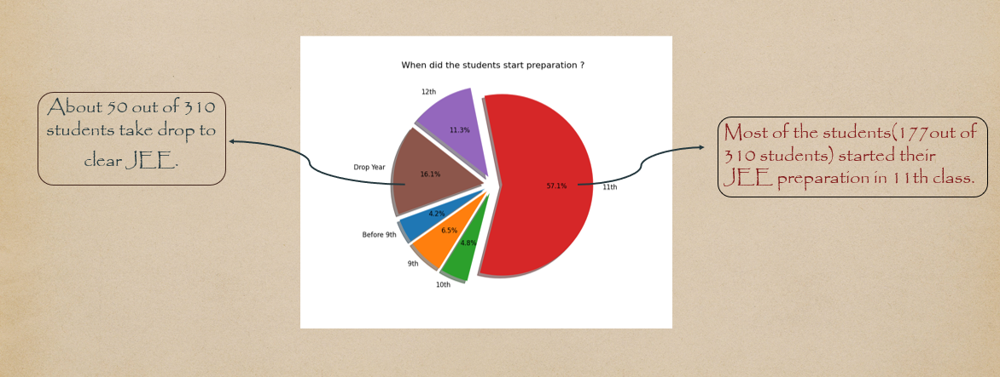 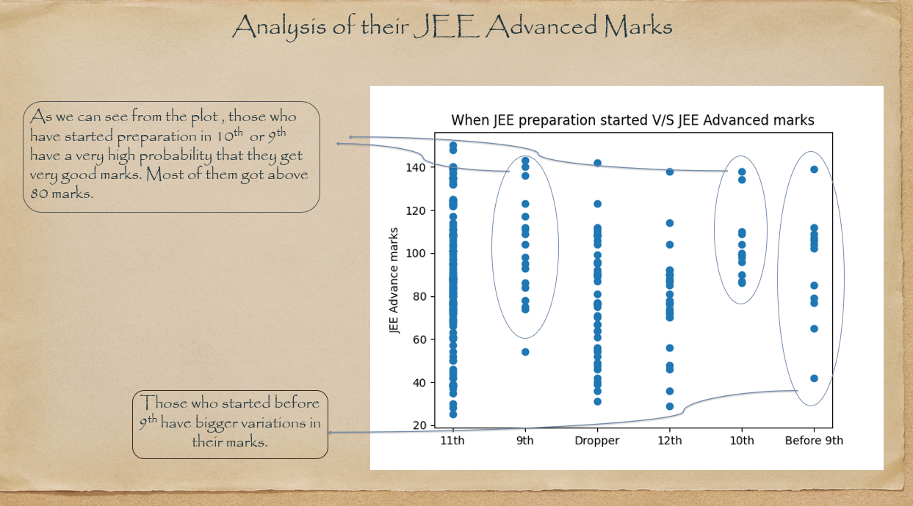 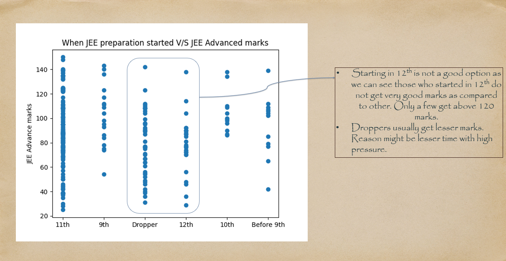 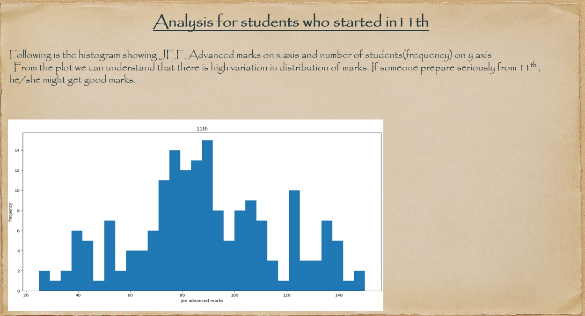Which school type to choose?
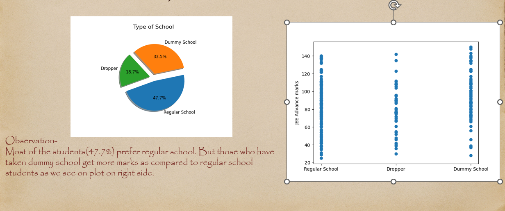 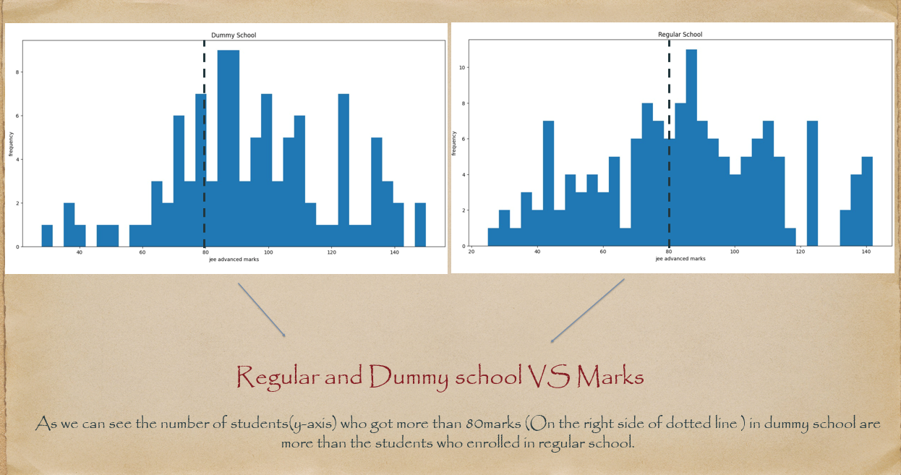Which study material to use?
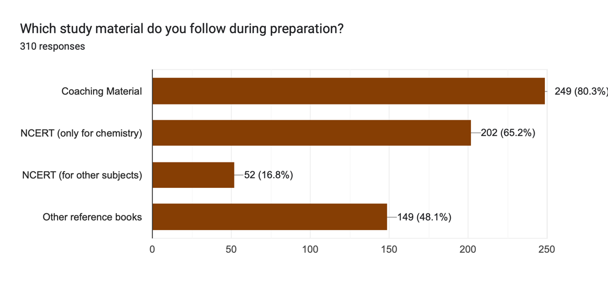 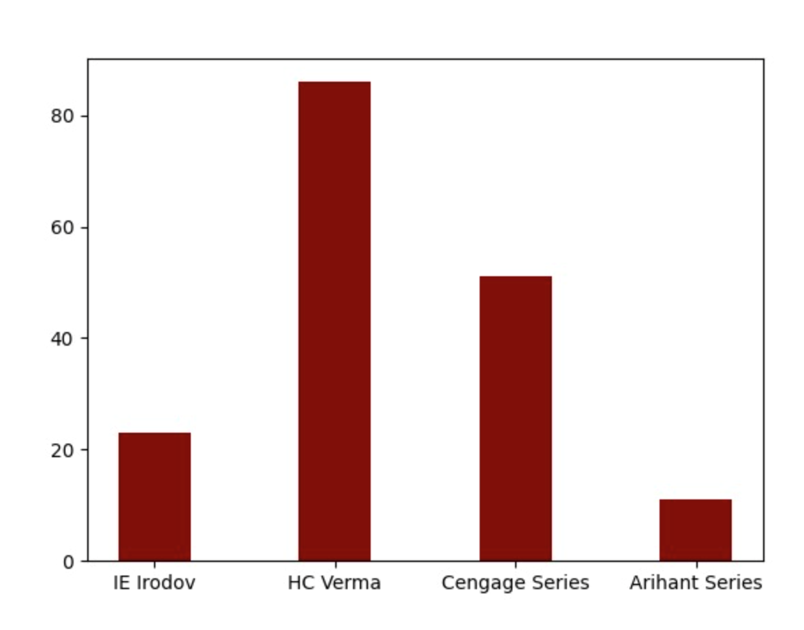Observation: Students enrolled in coaching centers give first preference to coaching material as it covers almost every type of question. Additionally, students follow NCERT for chemistry as some questions come directly from NCERT. Other reference books include HC Verma and Cengage Series for maths and physics.
Time spent on Digital Media
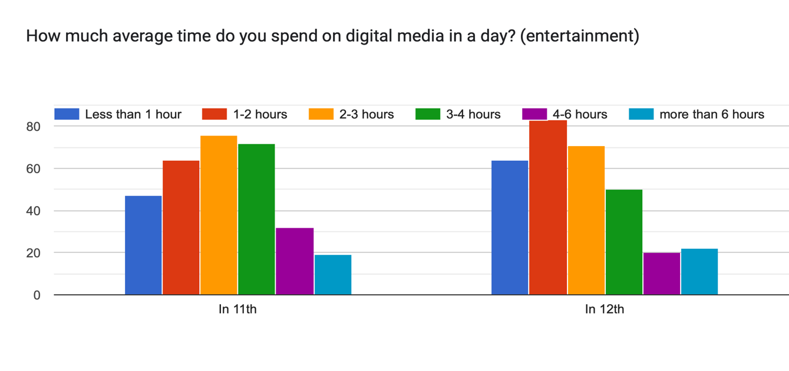Observation: Most students spend 2–3 hours per day on digital media for entertainment. This helps mental refreshment but addiction should be avoided.
Physical Activities vs Marks
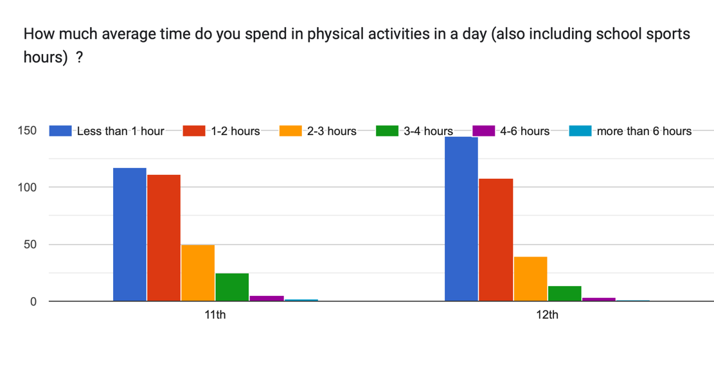Observation: Physical activities reduce stress, improve concentration, and help memory retention. Time spent decreases in class 12 due to increased pressure.
Study Time vs Marks
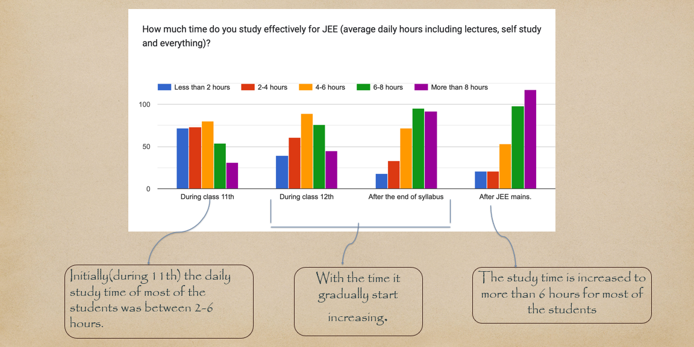 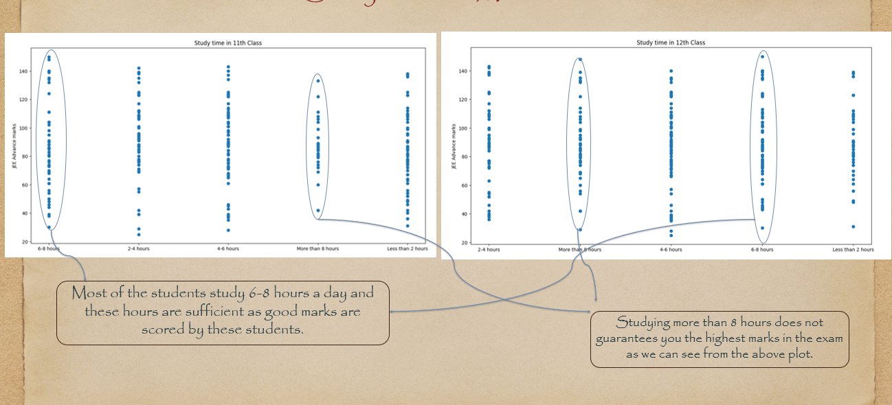National Level Test Exams
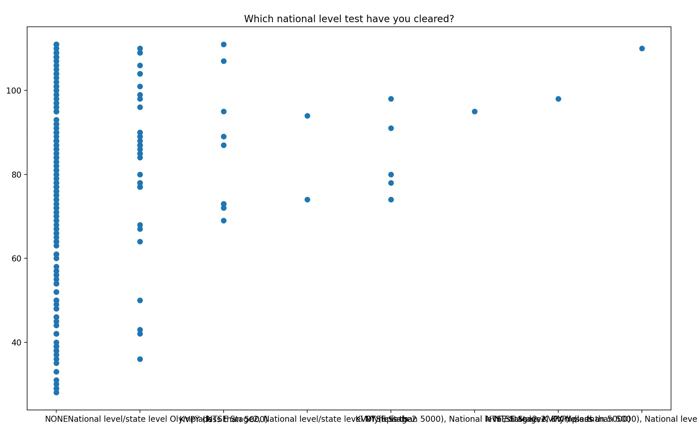Observation: Students who clear national/state level tests tend to score higher due to stronger problem-solving skills.
How many hours of sleep during JEE preparation?
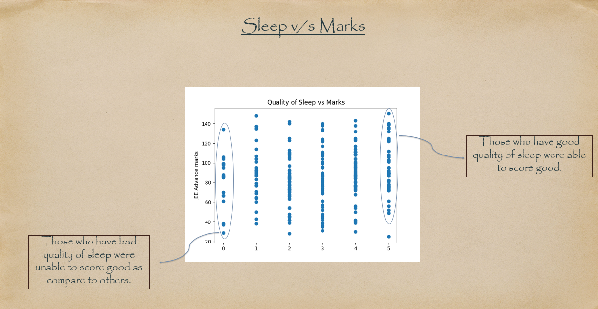Parental Pressure vs Own Interest
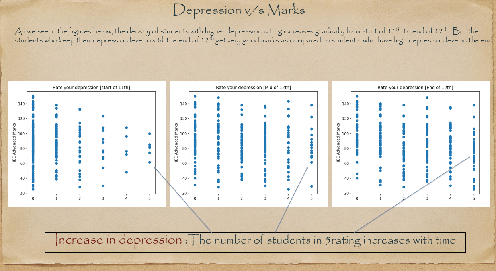How many mock tests during JEE preparation?
 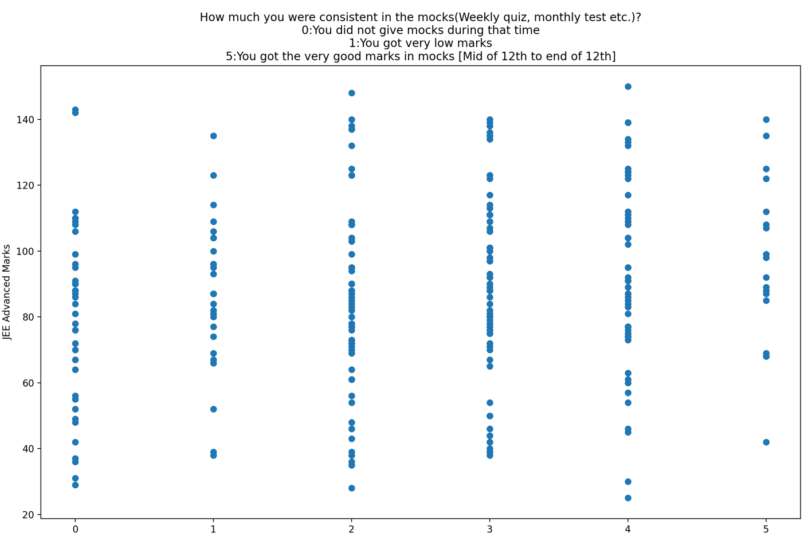
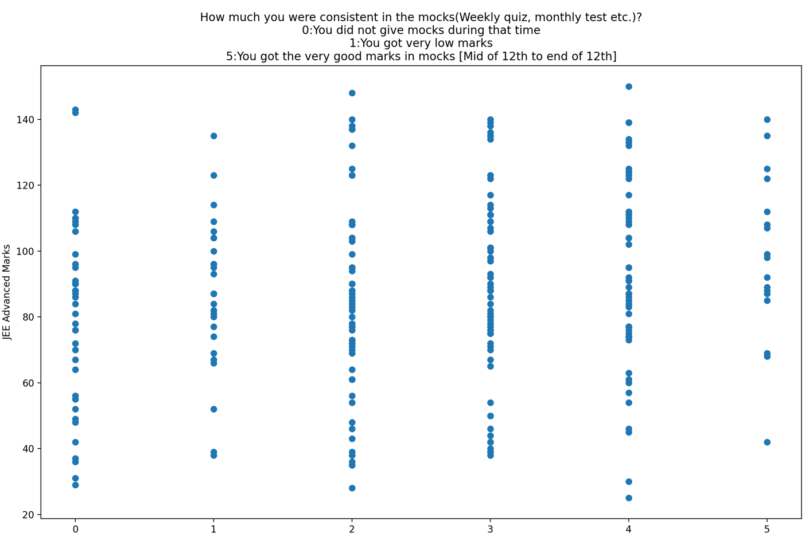
Observation: Students who take tests regularly perform better as they become familiar with exam patterns.